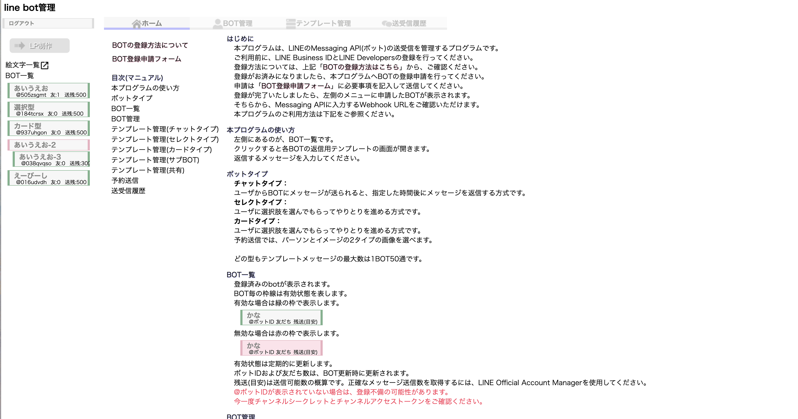
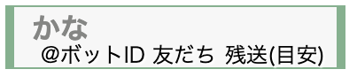
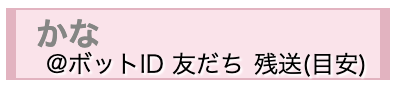
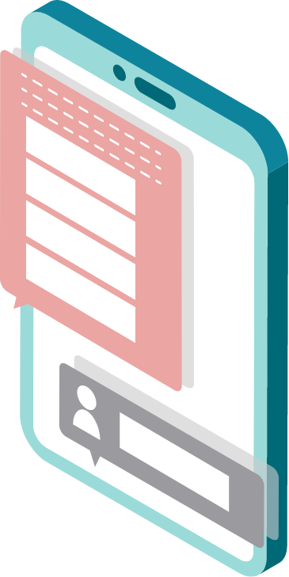
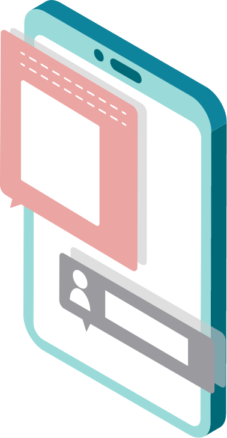
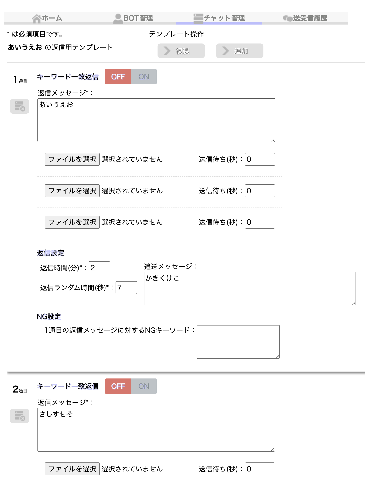
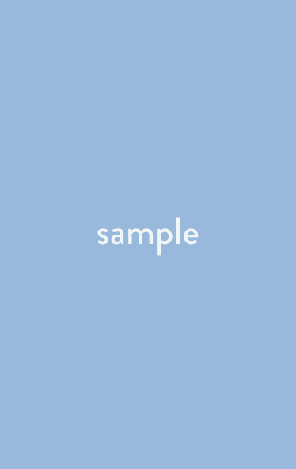
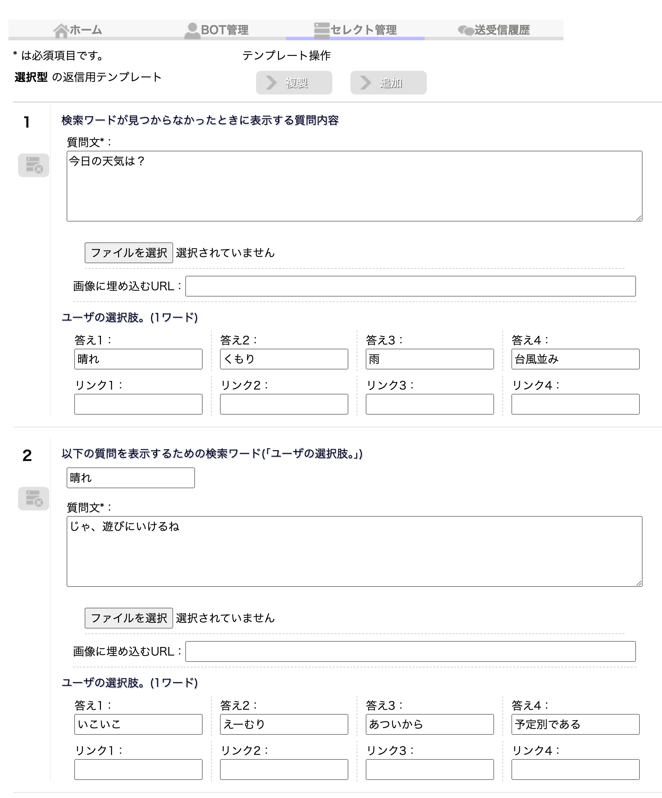
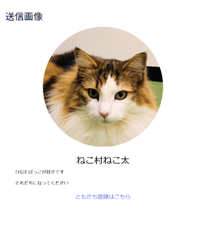

管理画面の各エリアと役割



設定後は必ず「保存」を押して反映させてください
| 項目名 | 説明 |
|---|---|
| BOT NAME | 管理画面上に表示されるBOTの名前です。 |
| チャネルシークレット必須 | LINE Developersの「チャネル基本設定」にある項目です。 |
| チャネルアクセストークン必須 | LINE Developersの「Messaging API設定」にある項目です。 |
| Webhook URL | LINE Developersの「Messaging API設定」に設定するURLです。最大文字数は2000文字です。 |
| メモ(任意) | メモ欄です。ご自由にお使いください。最大文字数は2000文字です。 |
| 追送信 | 一定時間ユーザから返信が無かった場合に、追送信するかどうかの項目です。 |
| 追送信時間 | 上記追送信がONの場合に、何分返信が無かったら追送信するかの項目です。単位は分です。 |


キーワード自動応答・ランダム配信が可能なチャット形式
| 項目 | 内容 |
|---|---|
| 返信ランダム時間 | 返信時間からさらにランダムで何秒追加するかの項目です。0～指定秒数のランダム時間を追加します。有効範囲は0～99秒です。 |
| 追送 | 一定時間ユーザから返信が無かった場合に再度メッセージを送る項目です。 BOT管理で、追送信チェックをONにした場合に動作します。最大文字数は2000文字です。 |
| 添付画像 | 1通の返信で送れるのは3枚までです。返信メッセージ送信後、それぞれの送信待ち(秒)後に画像を送信します。 有効ファイルはjpg, pngのみです。ファイルサイズは10MBまでです。 |
| 削除ボタン | 各◯通目ごとに削除が可能です。 |

最大4つのボタン選択肢でユーザーを誘導する形式
| 項目 | 内容 |
|---|---|
| 検索ワードが見つからなかったときに表示する質問内容 | 初回のメッセージテキストです。もしくは該当キーワードがなかった場合に「質問文*」に表示する内容を決められます。 |
| 質問文必須 | 選択画面と共に表示されるタイトルになります。 |
| 回答1~4 | 最大4つまで作成可能なユーザーが選択する回答ワードを設定します。最大文字数は15文字です。 空欄の場合は選択肢に表示されません。 |
| リンク1~4 | リンク先URLを設定します。最大文字数は50文字です。 ユーザのタップでブラウザが起動します。 （答えとリンクの両方に記入した場合は、答え欄の文字列でリンクするようになります。） |
| 画像埋め込みURL | URLのみは作動しないため画像を添付してください。 |
| 以下の質問を表示するための検索ワード(各選択肢への返信) | ユーザーの選択した回答に対しての返信をそれぞれ作成できます。 質問と回答を続けたい場合は継続して回答を作成していき、リンクへ繋げたい場合は任意の回答でご案内へ進めてください。 |


画像・テキスト・ボタンを組み合わせたカード形式
| 項目 | 内容 |
|---|---|
| 送信画像必須 | アイコンまたはイメージとして使用する画像を選択してください。 |
| 送信メッセージ必須 | カードと合わせて送信されるメッセージを入力します。 |
| [パーソン] | ユーザーを紹介しているような形式でメッセージが送信されるタイプです。 アイコンになる画像、名前、一言のコメントを設定できます。 リンクボタンのテキストも自由に決められます。 「友だち追加はこちらから」「キミに決めた！」等オリジナルでボタンが作成できます。 |
| [カード] | 画像とリンクボタンのみで送信されるメッセージです。画像は四角形で切り取られます。 横長・縦長にも切り取り可能なので好みの拡大縮小、調整をして設定してください。 一度追加した画像を削除したい場合は別の画像を添付するか、クリア欄のチェックをつけてから保存操作を行うと削除されます。 |
| ボタン | タップ時の遷移先URLとラベルテキストを設定。 ボタン化のON/OFFを切り替えると文字のみかボタン枠が切り替わります。 |

この機能では、テンプレートを親子構造で管理できます。
| 項目名 | 説明 |
|---|---|
| マスター(親)テンプレート | ・共通設定を持つテンプレート ・複数のBOTから参照される |
| クローン（子）テンプレート | ・マスターを参照して動作 ・テンプレートは親から引き継がれ、編集不可 |
今後も機能を追加・変更していく場合がございます。
| 機能 | 説明 |
|---|---|
| 送受信履歴 | ボットとのやりとりの記録を確認できます。 日付毎の一覧になっており、「Re:」がついているメッセージがボットの送信したメッセージです。 画像の送信記録は保存されません。 個別アイコンをクリックすると個別送信するための画面を開きます。対象のユーザ宛に即時個別送信が可能です。 |
| 予約送信※ | ユーザが友達登録を行った時点を基準として、指定時間後にメッセージを送信します。 返信の有無は関係なく、時間経過で送信を行います。 送信形式はチャットタイプまたはセレクトタイプで選択可能です。 予約時間は分単位で99999分まで設定可能です。(約69日) 設定する時間はユーザが友達登録を行った時点を基準とするため、前のメッセージより短い時間を設定できません。また、間隔は3分以上空けてください。 |